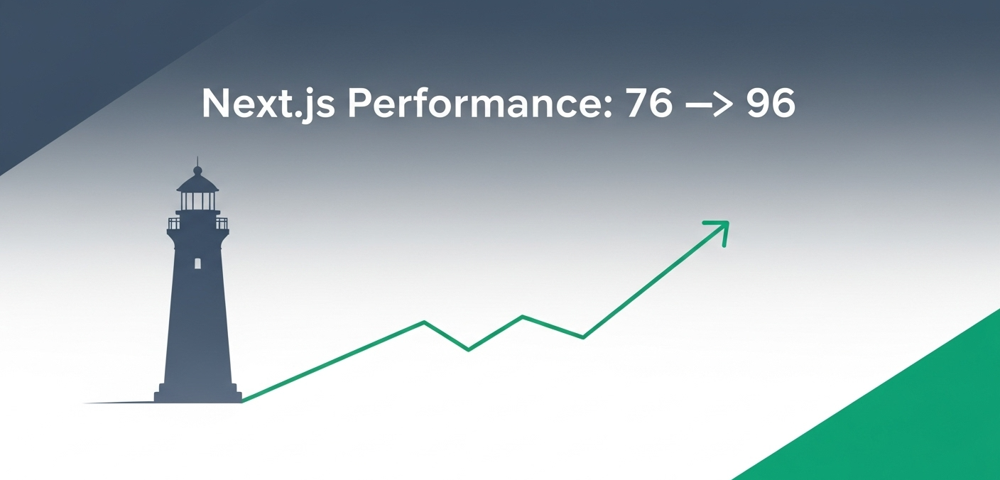

How I Boosted My Next.js Landing Page from 76 to 96 on Lighthouse
A 50KB animation library was blocking my landing page render. Here's how I replaced it with CSS and gained 20 Lighthouse points in the process.
Next.jsPerformanceAccessibilityWeb Vitals